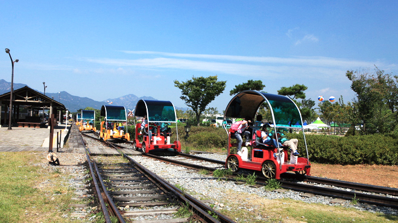
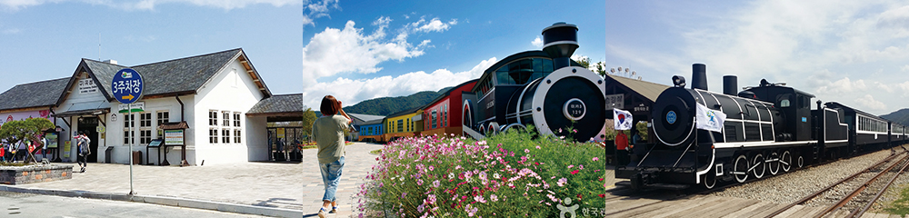
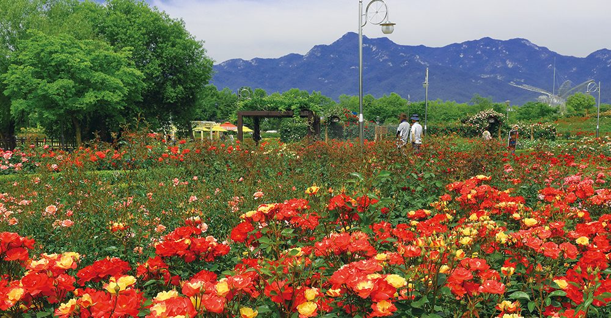

와 제 롤모델이 잡스에요!!! 아이폰 첫 출시되고 나서부터 계속 아이폰 쓰고 있는데 잡스가 너무 그리워요ㅠㅠ 지금은 돈만 벌려고 하는 것 같아서 디자인 발전도 없고ㅠㅠ와 제 롤모델이 잡스에요!!! 아이폰 첫 출시되고 나서부터 계속 아이폰 쓰고 있는데 잡스가 너무 그리워요ㅠㅠ 지금은 돈만 벌려고 하는 것 같아서 디자인 발전도 없고ㅠㅠ와 제 롤모델이 잡스에요!!! 아이폰 첫 출시되고 나서부터 계속 아이폰 쓰고 있는데 잡스가 너무 그리워요ㅠㅠ 지금은 돈만 벌려고 하는 것 같아서 디자인 발전도 없고ㅠㅠ와 제 롤모델이 잡스에요!!! 아이폰 첫 출시되고 나서부터 계속 아이폰 쓰고 있는데 잡스가 너무 그리워요ㅠㅠ 지금은 돈만 벌려고 하는 것 같아서 디자인 발전도 없고ㅠㅠ와 제 롤모델이 잡스에요!!! 아이폰 첫 출시되고 나서부터 계속 아이폰 쓰고 있는데 잡스가 너무 그리워요ㅠㅠ 지금은 돈만 벌려고 하는 것 같아서 디자인 발전도 없고ㅠㅠ
여행에 빠지다
5월에 떠나기 좋은 국내 여행지
곡성 17번 국도 철쭉길
해마다 4월 말부터 5월 초면 곡성 섬진강 강변은 분홍색 불이 난다. 곡성군 오곡면 섬진강 기차마을에서부터 가정역에 걸친 17번 국도변을 뒤덮는 불길은 철쭉 군락이다. 찻길을 달리던 차들이 연분홍 빛깔에 겨워 멈춰서고, 갓길은 자동차로 장사진을 이룬다.
글
우현석 (서울경제신문 객원기자 겸 여행 작가)
사진
곡성군청, 한국관광공사 제공
-
동악산
곡성군의 북쪽에 위치한 동악산 (動樂山)은 곡성 고을 사람 중 과거 시험에 급제하는 인물이 나올 때 마다 산이 흔들리며 아름다운 노랫 소리가 들렸다고 하는 데서 이름이 유래했다.
곡성을 찾았다면 동악산을 들러봐야 한다. 높이 736m의 동악산은 높지 않은 산세에도 불구하고 예부터 삼 남 제일의 암반계류라 불렸기 때문이다. 전라북도에 속하는 순창, 남원과 접경한 동악산은 두 개의 봉우리가 놓여 있는데 두 봉우리의 사이에는 배넘이 고개가 남북봉을 구분하고 있다. 동악산 초입에 차를 세우고 20분쯤 걸어 들어가면 청계동 계곡이 모습을 드러낸다. 높지 않은 산, 깊지 않은 계곡임에도 암벽을 흘러내리는 폭포는 이 곳이 삼남 제일의 암반계류임을 넉넉히 설명한다. 동행한 문화관 광해설사는 “청계동계곡은 임진왜란 때 의병장 양대박장군이 의병을 일으켜 훈련시키던 곳이라고 전해진 다”며 “동악산(動樂山)의 가운데 글자는 즐거울 樂(락)자인데 ‘악’자로 붙여진 까닭은 원효대사가 열일곱 차례나 성출봉을 오르내리면서 아라한 석상들을 길상암에 모셔 놓은 다음부터 천상에서 음악이 들려 온 산 에 퍼졌기 때문”이라고 말했다. -

레일바이크
침곡역~가정역 5.1km(편도 기준)를 운행하는 레일바이크는 2인승, 4인승 두 가지가 운행 중이며 편도당 30~40 분이 소요된다.
전라북도에 속한 순창, 남원과 전라남도의 곡성을 경계 짓는 섬진강은 지역의 젖줄이자 관광의 보고이다. 곡성군 내 36km 구간을 흐르는 섬진강은 강줄기를 따 라 레일바이크 출발지인 침곡역, 기차마을, 압록유원지, 오토캠핑장 등을 품고 있다. 진안군 팔공산 옥녀봉에서 발원하는 섬진강은 임실, 순창을 거쳐 옥과천과 합류하고 곡성읍 동산리에선 남원에서 내려오는 요천수와 몸을 섞는다. 수량이 풍부해 진 강물은 또 다시 오곡면 압록리에서 보성강과 합쳐지며 구례와 하동의 목마른 평야를 적신 후 남해로 빠져 나간다. 섬진강이 곡성군을 경유하는 거리는 36km에 달하는데, 유역과 지천에는 크고 작은 골짜기가 많아 풍광이 아름답고 강변을 따라 자전거하이킹코스가 뻗어 있다. -
기차마을은 갖가지 콘텐츠가 풍부한데다 조경도 아름다워 드라마나 영화 촬영세트로도 자주 사용되고 있다. 옛 향수를 불러 일으키는 증기기관차는 관광객들을 위해 섬진강 기차마을과 가정역 사이 철길 위를 오가고, 마을 안에는 새마을호 12량을 리모델링해 숙소로 꾸민 레일 펜션 등의 편의시설이 마련돼 있다.
-

1004장미공원
제8회 곡성 세계 장미 축제가 개최되 는 1004장미공원은 지난해 27만 1,618명이 방문한 인기 있는 곳으로 인파가 덜 붐비는 이른 아침과 저녁 시간에 이용하는 것도 좋은 꿀팁이다.
기차마을 안에 있는 1004장미공원도 볼만하다. 1004란 이름은 이 곳에 식재되어 있는 장미의 종류가 1004 종이나 되기 때문에 붙은 이름이다. 한편 오는 5월 18일 부터 27일까지 열흘간 곡성 섬진강기차마을 일원에 서는 제8회 세계장미축제가 열린다. 하지만 이 곳의 주인공은 뭐니뭐니해도 철쭉이다. 17번 국도변으로 흐드러지게 피어난 철쭉을 왼편에 두고 침곡역에서 가정역까지 10km구간을 페달을 밟으며 레일바이크를 달리노라면 세상이 온통 분홍빛으로 물 든것 같은 황홀경에 빠지고 만다.
-
최고예요
322
-
좋아요
322
-
슬퍼요
322
-
그저 그래요
322
-
화나요
322